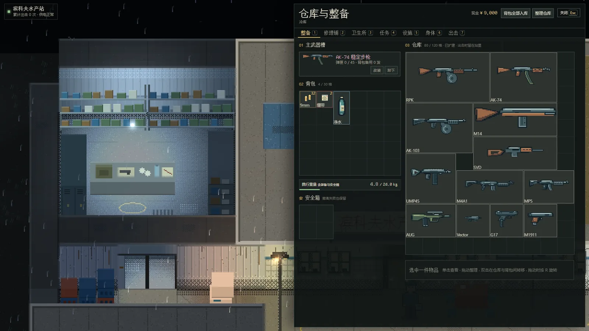
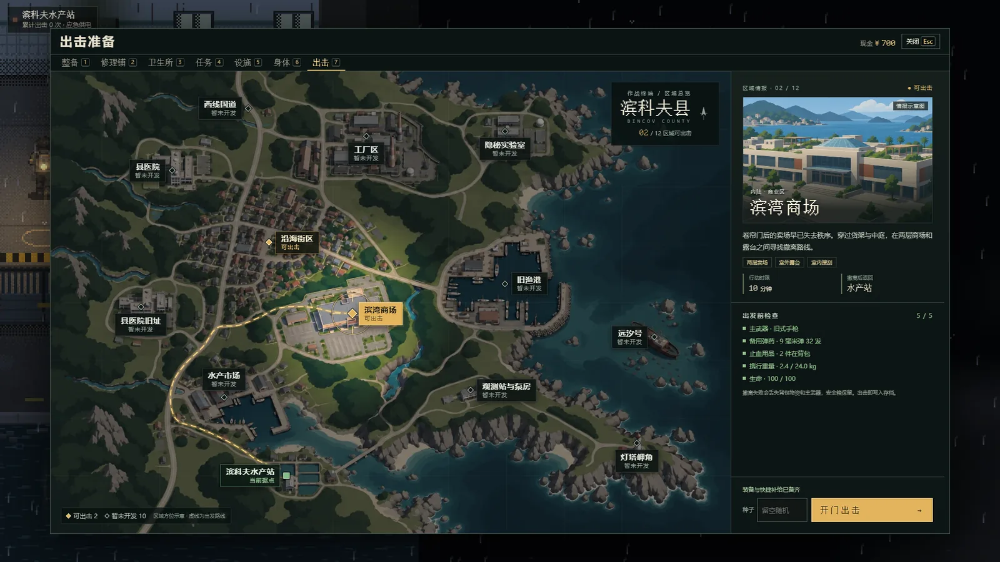
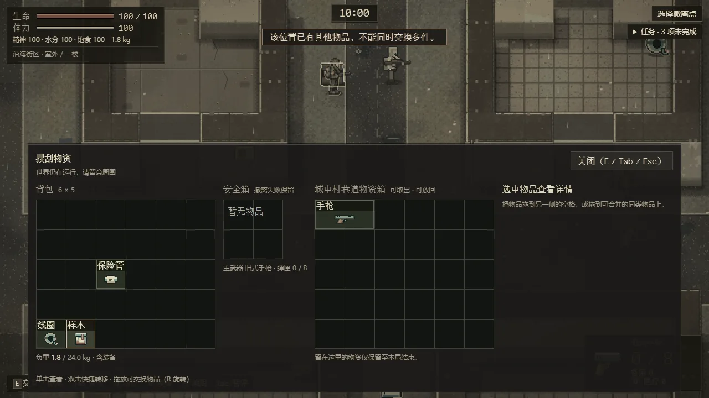
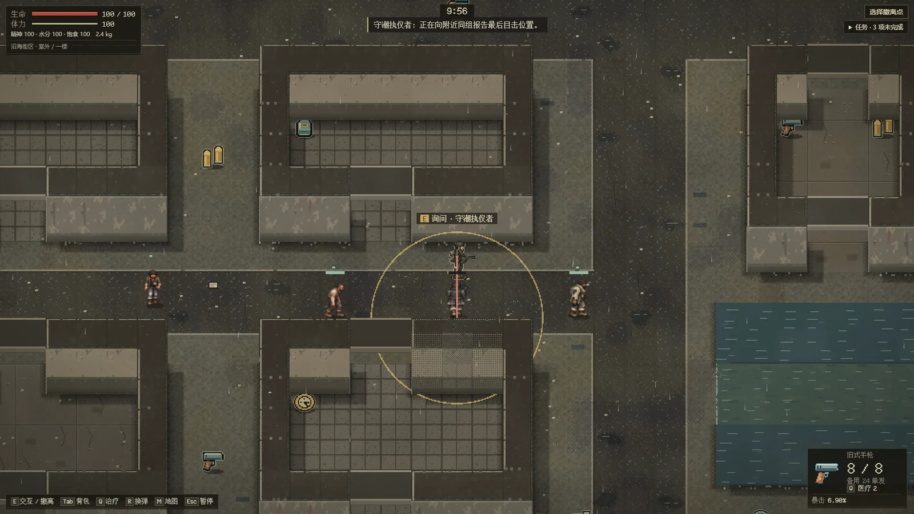
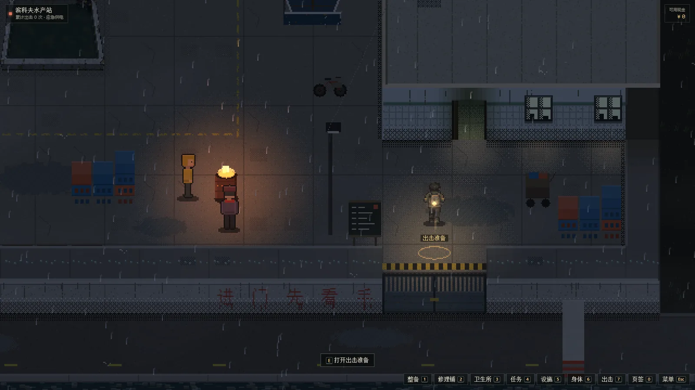

序 · 第十七天
台风进港前一天下午，你开车进了滨科夫县。
原打算装完货，当晚就走。
结果在县里困了十六天。
国道、跨海堤道和几座老石桥，全泡在浑水底下。
县里没人提“海淹了”，都管它叫潮水。
第十六天后半夜，西南角旧渔港方向
亮着一团黄光，一整夜都没灭。
那是滨科夫水产站。门垛上拿红漆刷了五个字：进门先看手
在这儿，出门找罐头和柴油叫出击；
能平平安安走回水产站大门，才算撤离。
01 / 行动流程
每局限时 10 分钟。从水产站出门，到能走回大门，中间的每一件东西都可能丢在外面。

仓库、背包、安全箱分开放。拖放、旋转、拆分物品，挑好主武器、备用弹药和药品。买来的东西进仓库，得自己整理进背包。
Tab 整备 2 修理铺 3 卫生所

走到院门，或按 G 打开出击准备。在县域地图上选一块区域，确认出发前检查，开门出击。
G 出击准备 7 出击页

箱子、尸体、货架都能翻。打开背包和地图时世界照常运转——没人会等你整理完。
E 拾取 / 搜刮 M 地图 滚轮 切换目标

枪械与近战。右键精瞄收紧散布，换弹要算时机。第 4 分 30 秒电台预警，第 5 分钟潮位变化。
右键 精瞄 R 换弹 Q 治疗

到达撤离区，停稳，按住 E 满 3 秒。死亡、超时或放弃，背包和主武器都留在外面；只有安全箱和水手匕首跟你回来。
E 按住 3 秒撤离
02 / 作战终端
十二块区域，眼下能出击的有两块。拖动潮位，看看海一天天往县城里漫——每次落潮露出的地都比上一次少。

淡黄的线是潮水到过的最高处——盐碱印，落潮后也不会消失。
03 / 遭遇记录
五方势力、十八种敌人。有人抢你的背包，有人只想按名单放行，也有东西已经不太像人了。
04 / 水产站互助会
四十多口人守着一个院子：鱼贩、船工家属、修船作坊的伙计。有三个人你每天都会碰到。
原县医院内科医生 · 卫生所
“嗓子干不干？一天喝几壶水？”
进站先摊开手心手背、挽起袖管。她的硬皮本上，记着每个进出的人的盐度。
前机械厂钳工 · 修配台
“站里不养闲人。能喘气，明天就跟着出门。”
油渍发亮的帆布围裙，说话时不抬头。第一把缠着黑胶布的水手匕首，是他从抽屉里摸出来的。
十九岁 · 守电台、管供电
“灯是我拿蓄电池接的。油桶里的柴油，只够发电机再转六天。”
每天清晨五点扳开电源，对着炭精话筒念同一张纸。你昨晚就是看着他的探照灯摸过来的。
05 / 老栓的修配台
托、握把、枪管、护木、瞄具、枪口，一件件换上去。改动先在台面上预览，按「确认」才装到枪上。
06 / 站里的日子
沿海街区、滨湾商场已能出击；县医院、旧渔港、灯塔岬角、搁浅的远汐号还在潮水里等着。
拾荒者团伙、潮蚀生物、盐蚀者、雇佣兵、沿海封锁队，各有各的打法和规矩。
二十把枪，像素级拼装。改动先预览，按「确认」才装到枪上。
休息区、医疗区、训练区、工作台、黑市。修好电源，接电台任务，扩建仓库。
存档在你自己的浏览器里，可导出、导入备份。交易与结算写失败可以重试，多开窗口有保护。
离线包解压即玩，不联网、不装环境。手机横屏也能玩：双摇杆和屏幕按钮。
撤离点 · 已启用
按住键盘 E 或下面的按钮 3 秒，撤回水产站——也就是开始游戏。
推荐电脑端 Chrome 或 Edge。项目仍在开发中，部分人物与场景还是占位素材；截图来自开发中的实际构建。